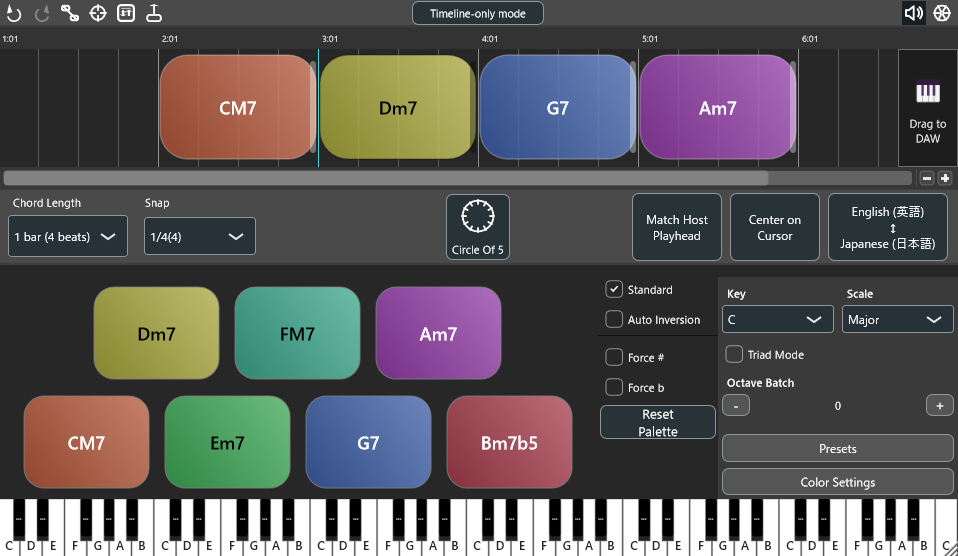
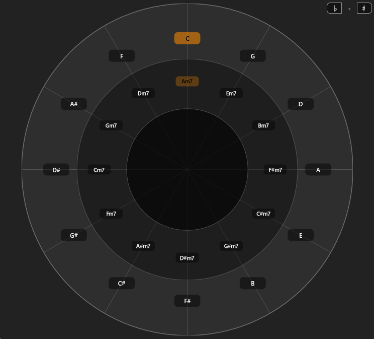
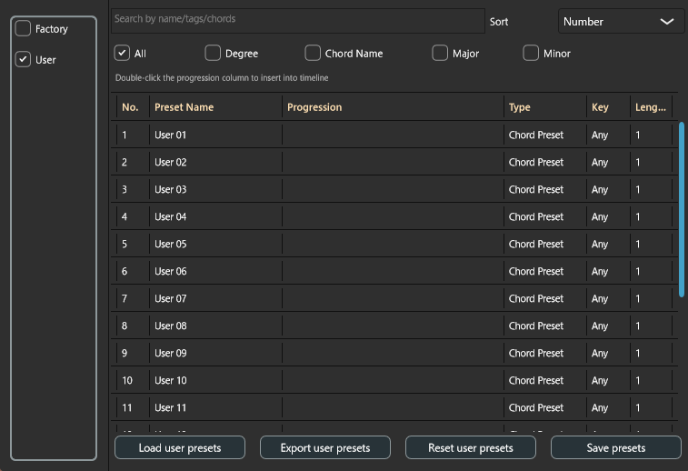
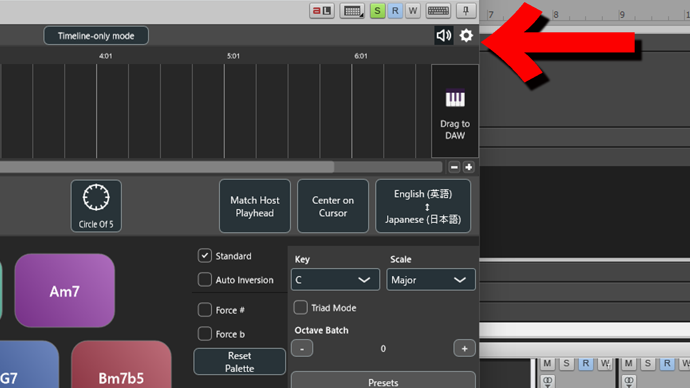
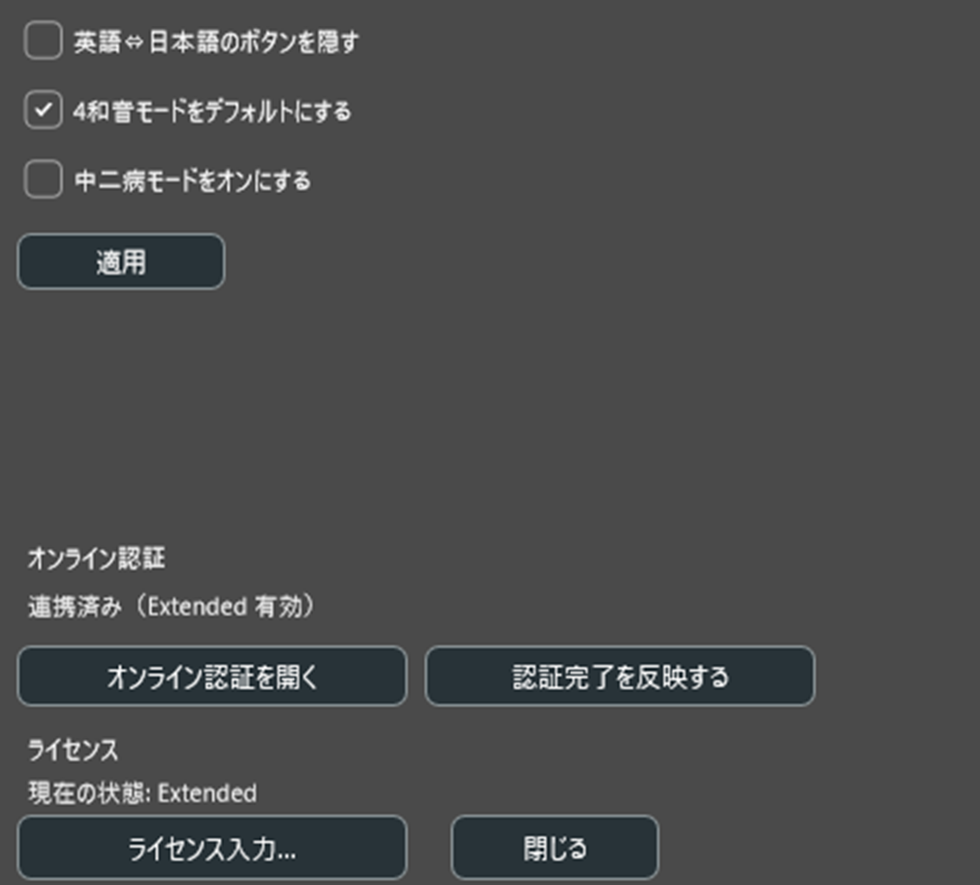

Chord Dock は、【タイムライン編集 Lite 】と【五度圏ガイド Extended 】でコード進行を設計し、MIDIドラッグ&ドロップでDAWへ素早く持ち出せる作曲支援プラグインです。Triad/Tetrad・テンション・スラッシュを直感的に切替、DAWを跨いで進行を共有できます。
※ Chord Dock の概要紹介動画です。
どのDAWでも同じ進行を再現。編集→試聴→MIDIドラッグの軽快ワークフロー。
ドラッグ/移動/リサイズ、転回・テンションもワンクリック。ダイアトニック提案で下書きが速い。
9/11/13 等を上付き表示で可視化。オンコードの最下音選択にも対応。
演奏より編集スピードを重視。必要に応じて他プラグインで音作りに繋げられます。
Liteは編集可能な10種のプリセットを収録。Extendedは20件のユーザープリセット保存と外部共有に対応。

ドラッグ/移動/リサイズで直感的に進行を構築。スナップ/小節グリッドで整列し、移調や転回もすぐに反映できます。編集→試聴→MIDIドラッグの短いループで、アイデアを素早く形に。
キーセンターと相対関係を可視化。ダイアトニック/近親の候補から素早く選べるので、進行の一貫性を保ちつつ変化も付けやすくなります。


よく使う進行はプリセット化して再利用。Extended では最大20件のユーザープリセットを保存、外部ファイルの書き出し/読み込みで他環境とも共有できます。
Lite と Extended で共通するコア機能と、Extended で追加される機能の違いです。
| 機能カテゴリ | Lite（無料） | Extended（有料） |
|---|---|---|
| タイムライン型コードエディタ | ✔ | ✔ |
| コードのリサイズ / 移動 / 複製 / 転回 | ✔ | ✔ |
| メジャー / マイナーコード | ✔ | ✔ |
| 7th 系（mMaj7 / m7b5 / dim / dim7） | ✔ | ✔ |
| テンション（9 / 11 / 13） | — | ✔ |
| スラッシュコード（任意ベース） | — | ✔ |
| 五度圏ビュー | — | ✔ |
| ext Snap（高度なスナップ） | — | ✔ |
| ext Range（柔軟なレンジ編集） | — | ✔ |
| ドラッグ&ドロップMIDI書き出し | ✔ | ✔ |
| コード進行ファイルの書き出し / 読み込み | ✔ | ✔ |
| おすすめの用途 | フル尺のコード進行を素早く組み立てるための基本ワークフロー | 高度なハーモニーデザインと、細かなプロダクションワークに最適 |
ワークフロー・可搬性・編集UXの観点で比較（参考）。
| カテゴリ | Chord Dock（Extended） | Scaler 3 | InstaChord |
|---|---|---|---|
| 主な狙い | 進行の可視化・編集、DAW間の可搬性 | AI提案・コード検出・演奏支援を中心とした包括的作曲補助 | コードトリガー／ストラム、簡易進行 |
| 進行エディタ（タイムライン） | あり（自由編集・移調・スナップ機能） | あり（パターン/セクション単位、やや制約あり） | 基本的なパターン |
| 五度圏の統合 | あり（キーセンター・相対関係を視覚化） | 限定的（キー/スケール情報は参照） | なし |
| テンション対応 | 9/11/13・テンションマスク・上付き表示 | あり（音声出力で確認可能） | 限定的 |
| スラッシュ（オンコード） | あり（最下音指定） | あり | 限定的 |
| AI提案/検出 | 非搭載（シンプル操作重視） | 搭載（コード検出・推奨進行） | なし |
| DAW間可搬性 | 非常に高い（記号ベース、MIDI出力独立） | 中程度（プロジェクト依存） | 限定的 |
| UI設計 | フラット・視認性重視 | 情報密度が高くやや複雑 | 簡素 |
| 価格帯（参考） | $39 | $79～$99 程度 | 約$69 |
コードトラックとしての基本のタイムライン編集
移調や転回、オクターブ調整が柔軟なコードパレット
MIDIドラッグ&ドロップ
コード進行をファイルとして書き出し、読み込み可能
書き換えと保存が可能な10個のファクトリープリセットを収録
五度圏・テンション/スラッシュ/高度な可視化を解放
書き換え、保存可能な20個のユーザープリセットを解放
ChordDock Extended は、購入後に発行されるシリアルキーでアクティベートします。
プラグイン右上の設定メニュー（ギアアイコン）から「ライセンス入力…」を開きます。


シリアルキーを入力するとブラウザが立ち上がり、Chord Dock アカウントにログインしてデバイスを承認します（オンライン認証）。
ライセンスはアカウントに紐づき、デバイス間で管理されます。詳しい台数制限や手順は、このページ下部の FAQ をご覧ください。
各質問の行をクリックすると、回答が開閉します。
対象外です。Chord Dock は「進行の可搬性・可視化・編集速度」に特化しています。検出機能が必要な場合は他製品と併用してください。
1アカウントにつき2台まで同時にアクティベーション可能です。
不要な端末のアクティベーションを解除すると、別端末で有効化できます。
手順は次のとおりです：
承認が完了すると、その PC でも Extended として利用できます。すでに2台とも認証済みの場合は、不要なデバイスのアクティベーションを解除してから再度お試しください（Q8 も参照）。
アクティベーション後はローカル状態を永続し、オフラインでも利用できます。
VST3 / AU / AAX に対応しています。
Chord Dock は Lite / Extended 共通インストーラーです。Extended として使う場合は、シリアルキーを再度入力し、オンライン認証を実行する必要があります。
OS 再インストールやマシン移行時などにシリアル情報が失われると、Lite 状態に戻ることがあります。
Chord Dock の「設定 → オンライン認証」を開き、ログインしてください。そこで以下が確認できます：
購入メールを探すより早いので、まずここを確認してください。
以下をご確認ください：
「設定 → オンライン認証」でデバイス一覧が表示されます。不要なデバイスを解除することで、新しい PC で認証できます。
以下を確認してください：
その他：
以下をお試しください：
パスの例：
古い AAX が残っていないかも確認してください。
必要ありません。シリアル未入力時は自動的に Lite として動作します。
次の点を順に確認してください：
上記を行ったあとに DAW を再起動し、もう一度プラグインを開いてください。それでも Lite のままの場合は、お手数ですがお問い合わせフォームからご連絡ください。
基本的に後方互換です。まれに DAW 側のキャッシュの影響で、プラグインの再スキャンが必要な場合があります。
消えません。ユーザー設定・プリセットは OS のユーザーデータ領域に保存されています。
以下のような扱いになります：
ただし、以下の場合はネット接続が必要です：
※ 各ホストのMIDIルーティング手順は簡易ユーザーガイドを順次公開します。